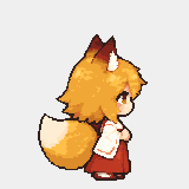

Bắt đầu9frame/200ms; đi36frame theo quãng đường96px/chu kỳ; dừng9frame chuyển động trong200ms rồi giữ pose cuối40ms, tổng240ms. Các điểm nối dùng chung đúng ảnh idle/walk, không tạo thêm ảnh đứng để lấp số frame.
Có pause kiểm định0,25giây ở giữa chuỗi (khoảng1,67giây). Đây là tình huống thử pause/resume, không phải lỗi khựng của clip. Bấm Phát trong player; có thể kéo từng sample và bật/tắt điểm tiếp xúc.
Player dưới đây phát trace4giây do chính Animator production sinh ở tick60Hz.240sample hiển thị không phải240ảnh vẽ; clip nguồn vẫn9/36/10frame. Chỉ là harness hình ảnh, chưa mô phỏng lực, tốc độ cơ thể hoặc gờ desktop.

Capture từ renderer native: đã kiểm tra đủ9/36/10frame thực sự Present ở hai hướng và pose đóng băng khi pause. GIF chỉ phụ trợ, delay bị lượng tử theo định dạng; dùng player/manifest làm chuẩn thời gian. Chưa phải đo cadence phần cứng hoặc QA chuột tay.
Trace phải/trái · Nguồn và timing · Báo cáo
Candidate chỉ có bốn clip cho chuỗi đi ngang, thiếu toàn bộ trạng thái của runner đầy đủ. Bộ ảnh mặc định vẫn v5. Contact toànchu kỳ, sync ở cả hai pha dừng và chuyển hướng còn cần kiểm tra trước tích hợp.